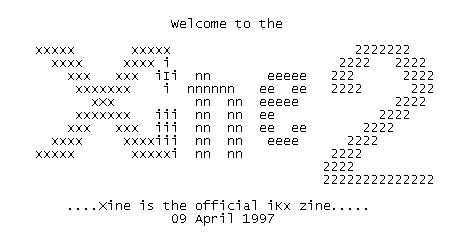

iKx xine #2
Editional
WTF do you think you are currently reading??
Second issue editorial
Disclaimer
How to (not) contact us?
Greetings and such like
Interview with MrSandman of 29A
News and events
Articles
Userlevel TSR under Win (3.1 up to 95)
Virus spreading on TCP/IP networks with Windows
Finding Kernel32 API's
Coding in 32 bit assembly for Win95
PE Infection preparations
The 18 Tech
TBAV CRC files demistyfied
Wordmacro mailing intro
Introduction to Amiga platform
Amiga residency
Infecting Amiga executables
Gaining information about a site from outside
TUPoSca - TCP/UDP Port Scanner 0.1b
Codes
IP Scanner
Virus - Homer
Virus - Header Infector
Virus - Spawn95B
Virus - Puma
Virus - Xine2
Virus - Sailor.Uranus
Virus - Sailor.Pluto
Virus - Sailor.Neptune
Virus - B00bs
Amiga Virus - Beol ]I[ v2
Amiga Virus - Beol 96 Poly Engine
Disasm - Guerilla.1996
Short Addendum to Injector (from issue #1)
